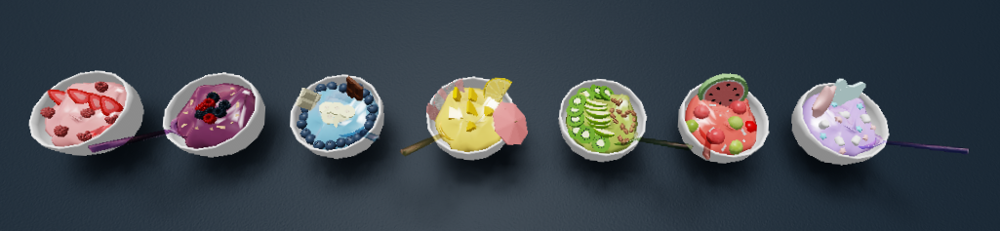
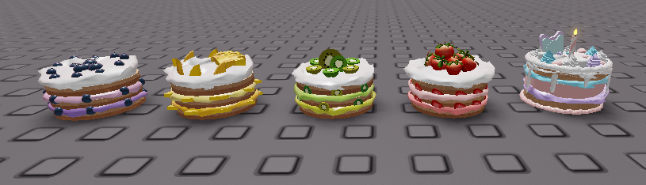
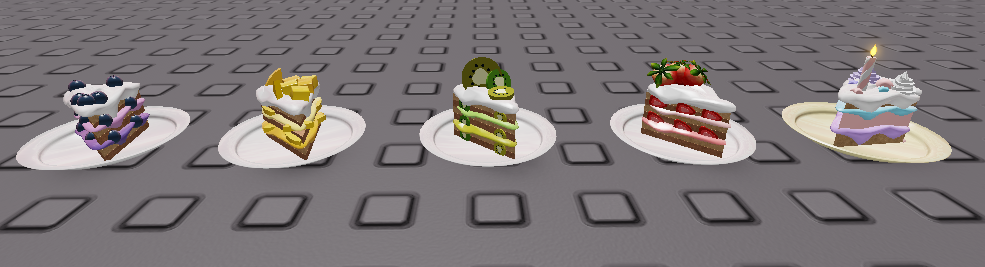
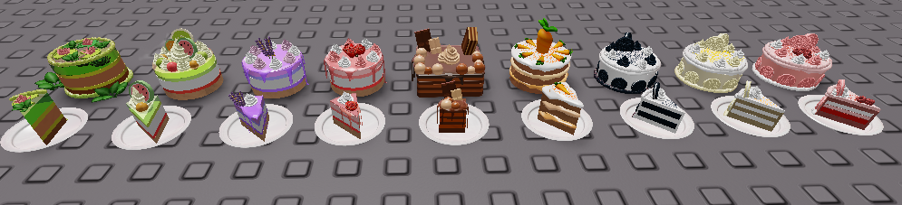
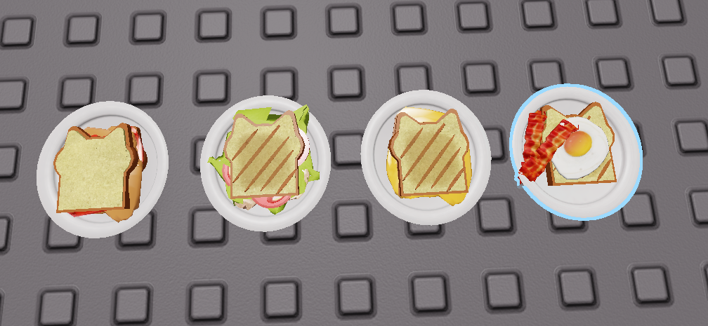

(from left to right) Pink Medley, Berry Medley, Blue Sky, Citrus Surf, Green Machine, Summer Melon, Kim's Signature Cotton Candy Clouds

an array of cream/mousse cakes with fruit. also my own birthday cake, which is cotton candy-marshmallow flavored.

the slice version of the cakes above.

the fall season really amplified my love for creating this set. it includes an adorable pumpkin kitty family of a crockpot/big pot, a smaller pot, a spice jar, and a blender for making puree or anything that needs blending.

i really enjoyed making different cake flavors and styles, inspired by those youtube videos I'd see of japanese/korean cake baking. it's too long to list all the flavors, but it ranges from a lilypad pond jelly cake, to a set of vanilla, raspberry, and regular oreo cakes.

a cute array of sandwiches and toast in the shape of a cat. there's PB&J, tuna, grilled cheese, and bacon and eggs. what's not to love?.
© Original template "FIRSTBASE" by https://freedreamweavertemplates.org/. Kimberly Lawson, 2026. All rights reserved.